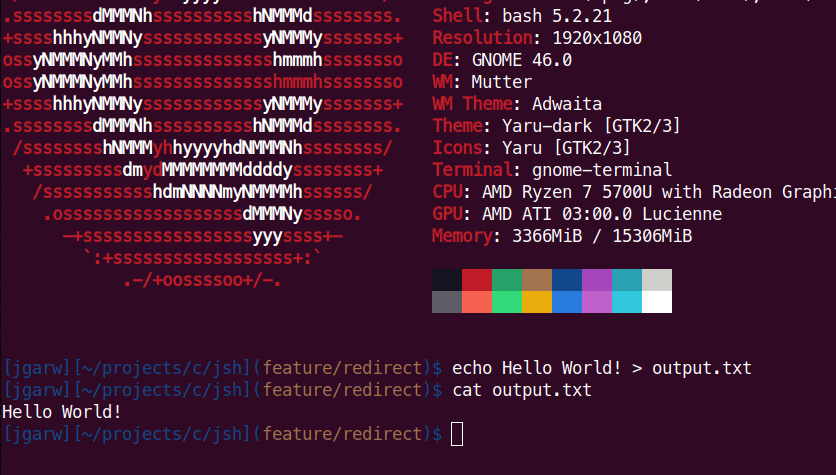
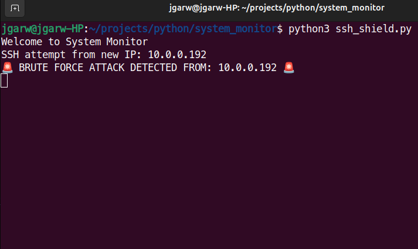
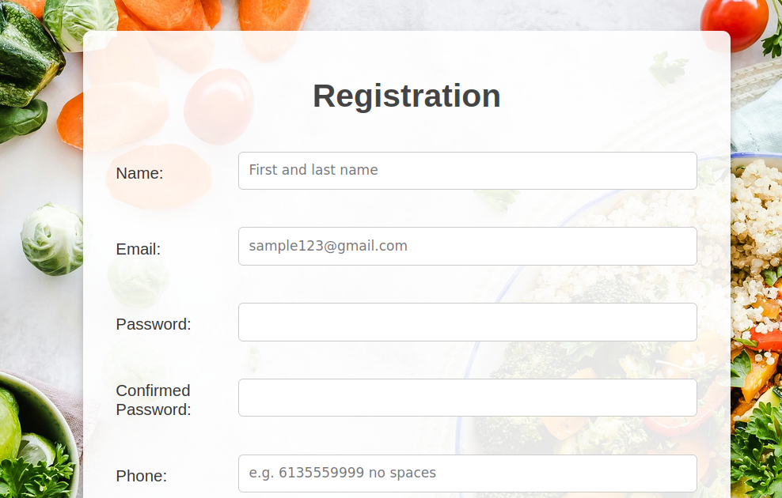

Joseph Garwood
About Me
I'm a passionate developer who loves building efficient and scalable applications. I enjoy working with various technologies and continuously learning new skills. Check out my projects below!
Projects
JSH
A custom Unix shell implemented in C, designed to replicate and enhance core shell functionalities with a user-friendly experience.
System Monitor
A Python-based security tool designed to help detect potential brute force attacks on SSH.
Food Waste Management App
A Java-based web application designed to help retailers cut down on food waste by allowing consumers and organizations to claim food items marked surplus or for donation.
Technical Skills
- Programming Languages: Java (JavaFX, Swing), PHP, C, SQL (MySQL, PostgreSQL, Oracle, Microsoft SQL Server), HTML, JavaScript, CSS, Dart
- Software Knowledge: Linux (Debian, Arch), IDEs (Eclipse, VS Code, PHPStorm), Git, Jira
- Containers & Cloud: OpenShift, Kubernetes, Docker, Azure, AWS
- Other Tools: Unit Testing (JUnit), Jenkins, Virtual Machines (VMware, QEMU)
Contact
Email: joegarwood@proton.me
GitHub: jgarw